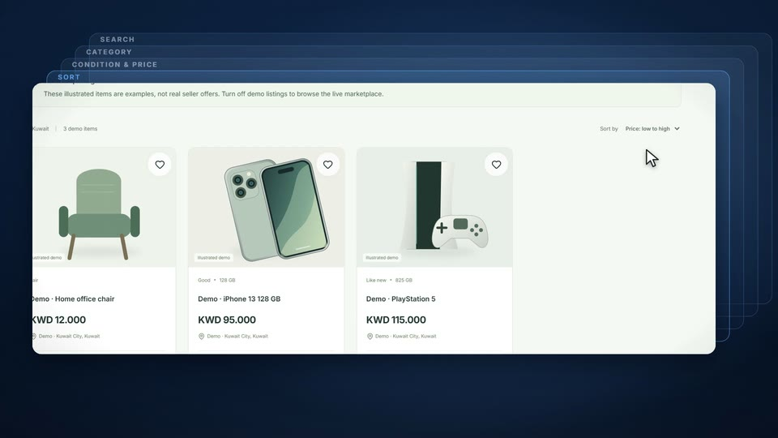
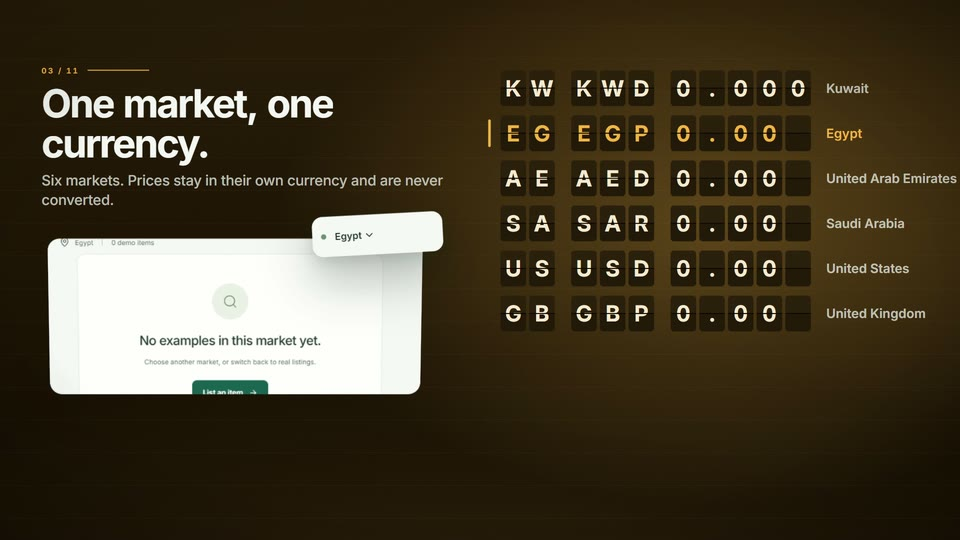
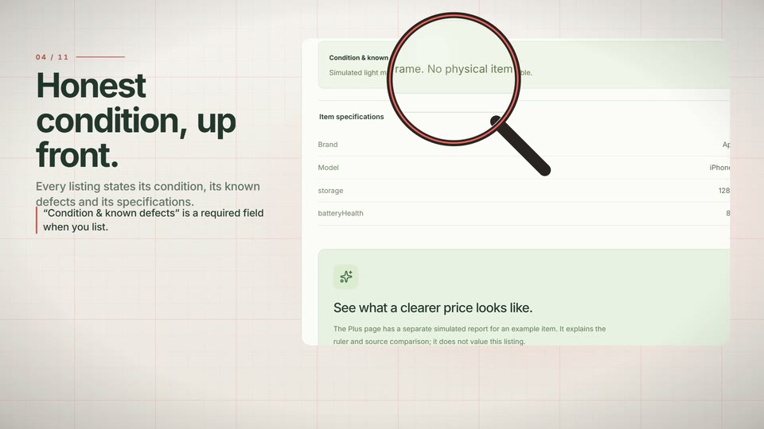
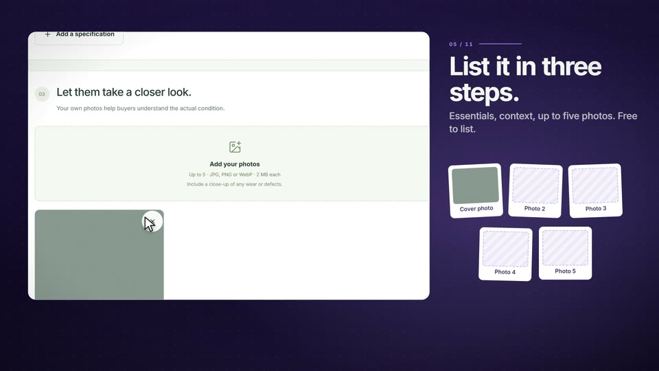
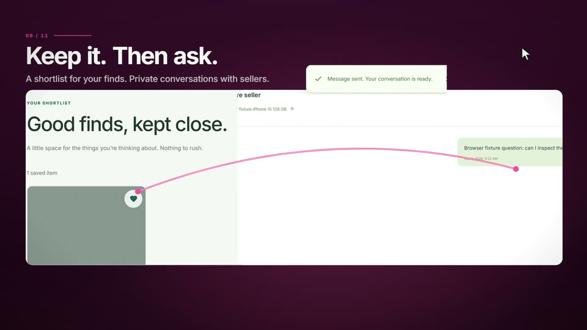
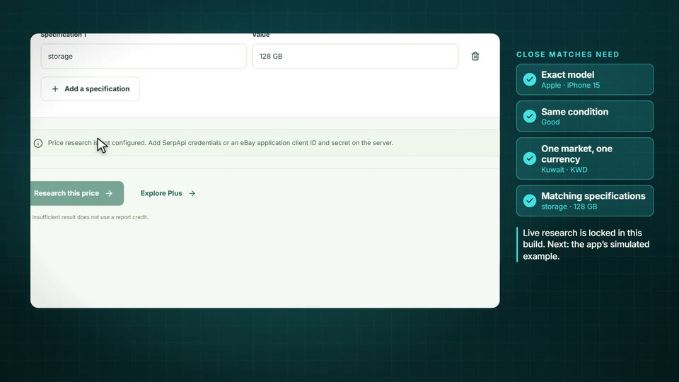
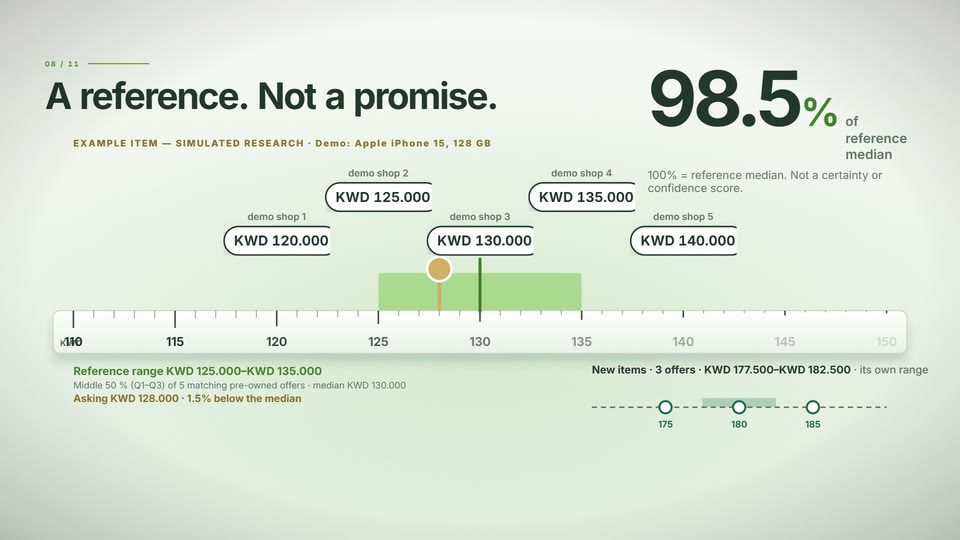
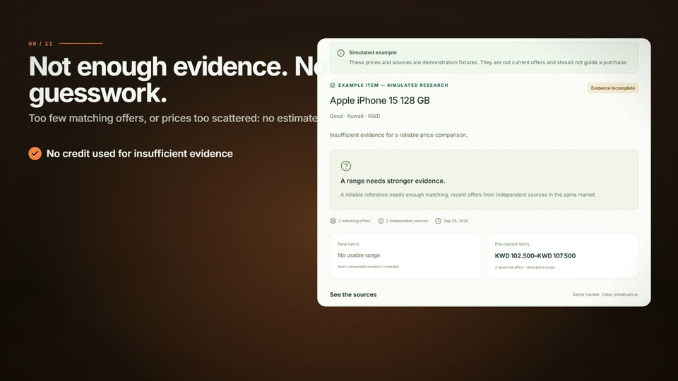
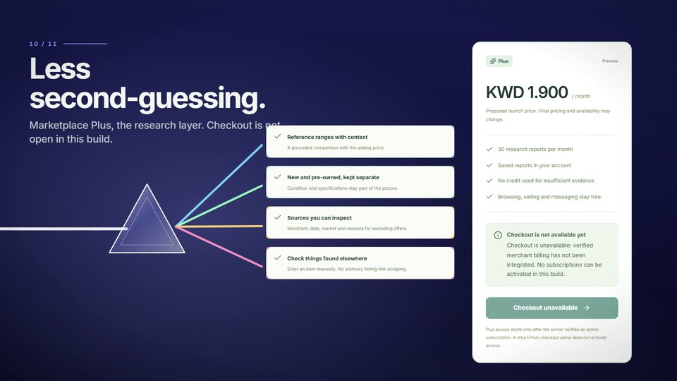
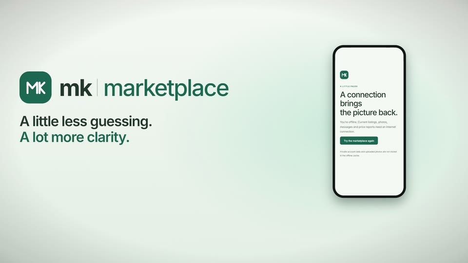

Buy with clarity.
MK Marketplace 0.1.0 is a classifieds web app with evidence-backed price research.
MK Marketplace 0.1.0 is a classifieds web app with evidence-backed price research.
A 135-second film of the real MK Marketplace 0.1.0: discovery, six markets, honest listings, selling, saved finds, messages and the evidence-based price report, on the app's own demo data.
MK Marketplace 0.1.0 is a classifieds web app with evidence-backed price research.

Search, six categories, condition and price filters and sorting, with demo items clearly labelled.

Six markets, each in its own currency; Kuwaiti dinars keep three decimals and nothing is converted.

Every listing states its condition, known defects and specifications, and demo items can't be bought.

Essentials, context and up to five photos; listing is free and the price stays the seller's.

Save finds to a shortlist and ask the seller in a private conversation, refreshed by hand.

Enter the exact item by hand, with no link scraping; live research stays locked in this build.

The simulated report puts the asking price at 98.5% of the median of matching offers, new and pre-owned apart.

With fewer than three matching offers, or prices too scattered, the report refuses to estimate.

Marketplace Plus is the research layer; checkout stays unavailable until billing is integrated.

An installable web app with phone navigation and an honest offline page.